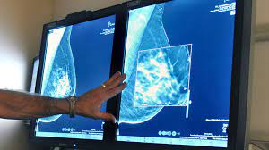

La detección temprana del cáncer es un factor crucial para salvar vidas y reducir los costos del tratamiento de esa enfermedad, según las autoridades en salud. Conocer cómo se logra esa detección se vuelve fundamental ahora que la incidencia del cáncer ha pasado cada vez más a ocurrir a edades menores, según un informe publicado en enero por la Sociedad Estadounidense del Cáncer. Entre los adultos estadounidenses de 65 años o más, los adultos de 50 a 64 años y los menores de 50 años, "los menores de 50 años fueron el único de estos tres grupos etarios que experimentó un aumento en la incidencia general del cáncer” de 1995 a 2020, dice el informe, que fue publicado en CA: A Cancer Journal for Clinicians. Aunque la población general de EE.UU. está envejeciendo, "estamos viendo un movimiento en los diagnósticos de cáncer hacia personas más jóvenes, a pesar de que hay más personas en las poblaciones de mayor edad", dijo el Dr. William Dahut, científico jefe de la Sociedad Estadounidense del Cáncer.
